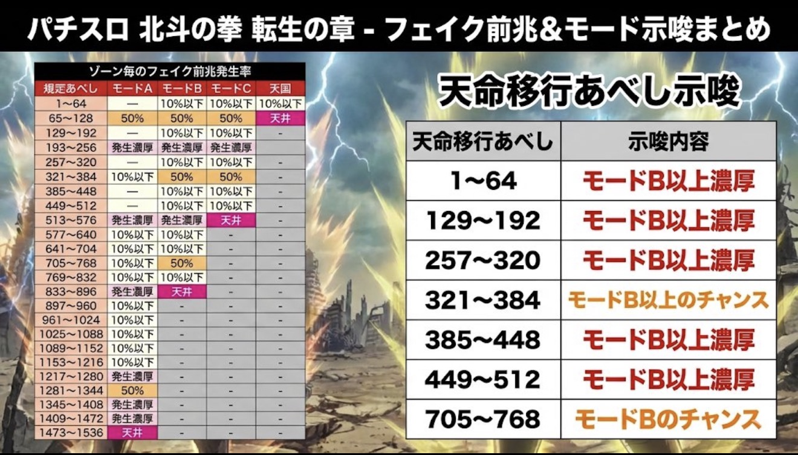
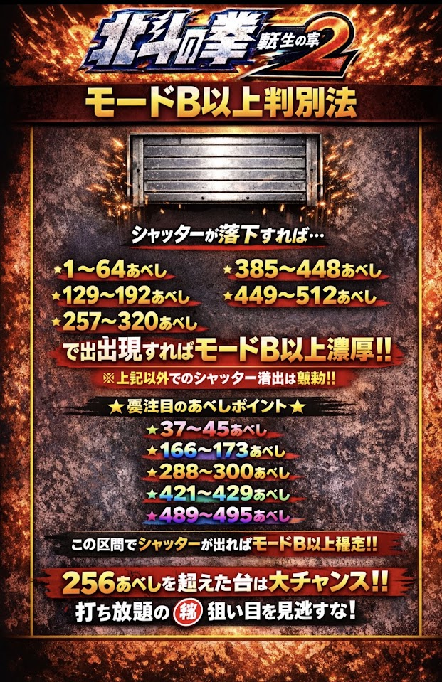
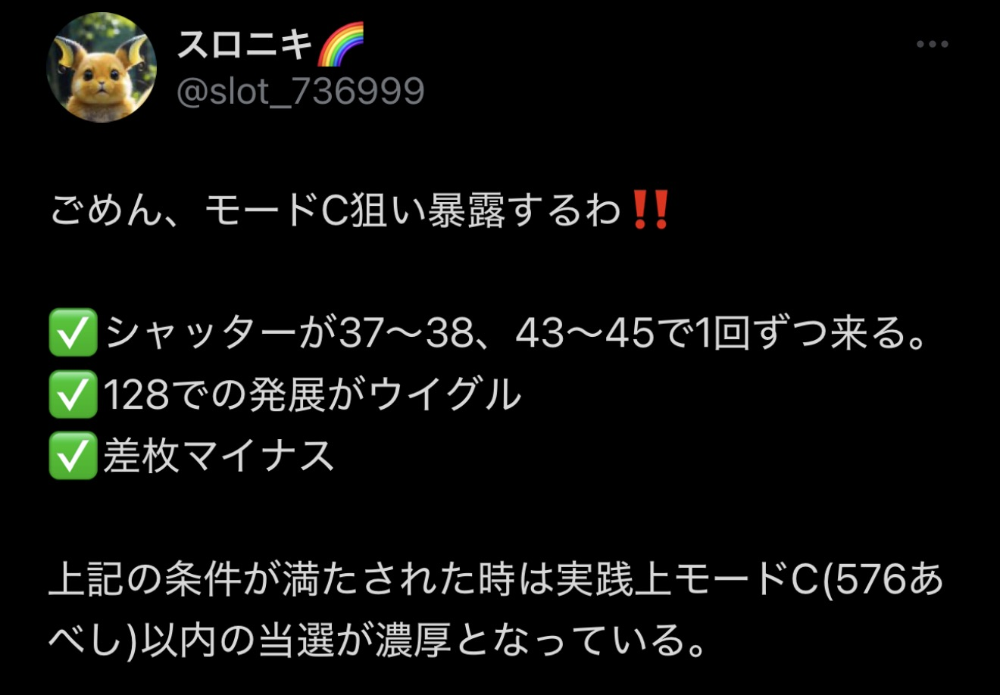

🚪 【設定判別フォルダ内資料完全網羅】シャッター演出＆モードB/C判別法
超重要立ち回り
HOKUTO APEX ANALYZER
🚪 シャッター発生あべし 即時解析コンソール
LIVE READY
実戦中、レバーONでシャッターが落ちた「あべし数」をワンタップ。滞在モード期待度・天井到達ライン・立ち回り方針を即座にシミュレートします。
★
【即ツモ確定】モードB以上（天井896以内）確定帯
超激アツ
●
【前兆看破】モードB以上 濃厚ゾーン
通常A否定
滞在推測モード
-
最大天井目安
-
立ち回り指示
-
🚨 ① シャッター発生で「モードB以上確定」ピンポイント区間
激アツ即ツモ
以下の極めて狭い特定ゲーム数でシャッターが落下した場合、モードB以上（天井896あべし）が確定します！
最優先チェック
37〜45あべし
★モードB以上確定！
天国抜け直後
166〜173あべし
★モードB以上確定！
256抜け直後
288〜300あべし
★モードB以上確定！
中盤チャンス
421〜429あべし
★モードB以上確定！
モードC手前
489〜495あべし
★モードB以上確定！
| 要注目のピンポイントあべし | シャッター出現時の示唆内容 | 立ち回り判断 |
|---|---|---|
| 37 〜 45 あべし | モードB以上 確定！！ | 次回ATまで当たるまで続行推奨 |
| 166 〜 173 あべし | モードB以上 確定！！ | 天国スルー後でも即ヤメ厳禁 |
| 288 〜 300 あべし | モードB以上 確定！！ | 256抜けの拾い目で最強の押し根拠 |
| 421 〜 429 あべし | モードB以上 確定！！ | モードB天井(896)射程圏内 |
| 489 〜 495 あべし | モードB以上 確定！！ | モードC(576)の可能性も大 |
🚪 ② シャッター出現で「モードB以上濃厚」区間一覧
濃厚ゾーン
| 規定あべし区間 | シャッター出現時の示唆 | 理由・フェイク前兆法則 |
|---|---|---|
| 1 〜 64 あべし | モードB以上 濃厚 | 通常モードAでは前兆非発生ゾーンのため |
| 129 〜 192 あべし | モードB以上 濃厚 | モードA非前兆帯。ここでザワつけばモードB/C濃厚 |
| 257 〜 320 あべし | モードB以上 濃厚 | 256超えでシャッター落下＝モードB期待度激高 |
| 385 〜 448 あべし | モードB以上 濃厚 | モードAの前兆マップ外 |
| 449 〜 512 あべし | モードB以上 濃厚 | モードC(576)視野の特大サイン |
| ※上記以外のあべし区間 | 無効（示唆なし） | 規定前兆区間内の通常ガセ演出のため無効 |
🔥 【スロニキ氏 実戦データ暴露】モードC（576あべし以内）濃厚パターン
実践値暴露
📷 【資料写真】設定判別フォルダ内 シャッター＆前兆画像
タップで拡大
タップするとiPhone全画面で拡大して鮮明に確認できます。

📷 IMG_7177: 天命移行あべし示唆＆フェイク前兆率

📷 IMG_7179: シャッター落下 モードB以上判別法

📷 IMG_7200: スロニキ氏 モードC暴露条件
🎰 スマスロ 北斗の拳 転生の章2 基本スペックマトリックス
ちょんぼりすた準拠
📱 設定別スペック早見カード（スマホ見やすい表示）
設定1
1/366.0
割 97.6%
設定2
1/357.0
割 98.4%
設定3
1/336.3
割 100.7%
設定4
1/298.7
割 106.2%
設定5
1/283.2
割 111.1%
設定6 ★最高峰
1/273.1
割 114.9%
📊 打ち方・詳細スペック表
| 設定 | AT初当たり確率 | 機械割 (出玉率) | 天破の刻 初当り | 初当たり期待枚数 | 設定判別での重要度 |
|---|---|---|---|---|---|
| 設定1 | 1 / 366.0 | 97.6% | 1 / 102.5 | 約 510枚 | 厳しい回収域 |
| 設定2 | 1 / 357.0 | 98.4% | 1 / 100.2 | 約 512枚 | 偶数ベース |
| 設定3 | 1 / 336.3 | 100.7% | 1 / 96.4 | 約 515枚 | 奇数ベース |
| 設定4 | 1 / 298.7 | 106.2% | 1 / 90.1 | 約 520枚 | 勝負ライン |
| 設定5 | 1 / 283.2 | 111.1% | 1 / 84.5 | 約 535枚 | 高設定域！ |
| 設定6 | 1 / 273.1 | 114.9% | 1 / 78.4 | 約 550枚 | ★最高峰エクストラ！ |
🍒 小役確率一覧＆成立時の役割（全設定共通）
全設定共通
📱 主要レア役合算確率（早見カード）
🍒 弱チェリー合算
1 / 99.6
あべし加算・天破契機
🍒 強チェリー合算
1 / 198.6
天破＆AT本命契機
🍉 スイカ
1 / 79.9
内部高確移行メイン
⚡ チャンス目
1 / 199.2
天破の刻 抽選
📊 小役確率・詳細一覧表（全小役完全網羅）
| 役名 | 確率 | 百分率 | 設定差 | 主な役割・成立時の挙動 |
|---|---|---|---|---|
| 弱チェリー合算 | 1 / 99.6 | 約 1.00% | 全設定共通 | あべし加算、低確・通常時の天破の刻抽選 |
| ├ 弱チェリーA | 1 / 199.2 | 約 0.50% | 全設定共通 | 角チェリー＋右リール中段ベル |
| └ 弱チェリーB | 1 / 199.2 | 約 0.50% | 全設定共通 | 角チェリー＋右リール中段ボーナス絵柄以外 |
| 強チェリー合算 | 1 / 198.6 | 約 0.50% | 全設定共通 | 天破の刻・AT直撃の本命契機（高確中は天破濃厚） |
| ├ 強チェリーA | 1 / 397.2 | 約 0.25% | 全設定共通 | 中段チェリー＋右リール中段ベル否定 |
| └ 強チェリーB | 1 / 397.2 | 約 0.25% | 全設定共通 | 中段チェリー＋右リール中段ベル |
| スイカ | 1 / 79.9 | 約 1.25% | 全設定共通 | 高確移行のメイン契機（スイカ契機の高確移行率に設定差） |
| チャンス目 | 1 / 199.2 | 約 0.50% | 全設定共通 | 天破の刻 抽選契機 |
| 勝舞揃い | 1 / 198.6 | 約 0.50% | 全設定共通 | 通常時の状態昇格・天破の刻契機 |
| 確定チェリー | 1 / 16384.0 | 約 0.006% | 全設定共通 | ★AT直撃確定＋北斗揃い期待度大幅UP！ |
| 右下がりベル | 1 / 8.2 | 約 12.2% | 全設定共通 | 押し順ベル（小役払い出し） |
| リプレイ | 1 / 8.7 | 約 11.5% | 全設定共通 | 通常リプレイ |
| ハズレ | 1 / 1.4 | 約 71.4% | 全設定共通 | 押し順不正解ハズレ含む |
| 50枚ベース | 約 31.8 G / 50枚 | |||
⚡ 【IMG_7177】天命移行あべし示唆まとめ
前兆移行でモード看破
| 天命の刻 移行あべし | 示唆内容 | 次回天井目安 |
|---|---|---|
| 1 〜 64 あべし | モードB以上 濃厚 | 最大 896 あべし |
| 129 〜 192 あべし | モードB以上 濃厚 | 最大 896 あべし |
| 257 〜 320 あべし | モードB以上 濃厚 | 最大 896 あべし |
| 321 〜 384 あべし | モードB以上のチャンス | モードB/C期待度UP |
| 385 〜 448 あべし | モードB以上 濃厚 | 最大 896 あべし |
| 449 〜 512 あべし | モードB以上 濃厚 | モードC(576)の可能性特大 |
| 705 〜 768 あべし | モードB のチャンス | モードB天井直前 |
📋 ゾーン毎のフェイク前兆発生率 完全対比マトリックス
モード看破マトリックス
| 規定あべし | モードA (最大1536) |
モードB (最大896) |
モードC (最大576) |
天国 (最大128) |
|---|---|---|---|---|
| 1 〜 64 | - | 10%以下 | 10%以下 | 10%以下 |
| 65 〜 128 | 50% | 50% | 50% | 天井 |
| 129 〜 192 | - | 10%以下 | 10%以下 | - |
| 193 〜 256 | 発生濃厚 | 発生濃厚 | 発生濃厚 | - |
| 257 〜 320 | - | 10%以下 | 10%以下 | - |
| 321 〜 384 | 10%以下 | 50% | 50% | - |
| 385 〜 448 | - | 10%以下 | 10%以下 | - |
| 449 〜 512 | - | 10%以下 | 10%以下 | - |
| 513 〜 576 | 発生濃厚 | 発生濃厚 | 天井 | - |
| 577 〜 640 | 10%以下 | 10%以下 | - | - |
| 641 〜 704 | 10%以下 | 10%以下 | - | - |
| 705 〜 768 | 10%以下 | 50% | - | - |
| 769 〜 832 | 10%以下 | 10%以下 | - | - |
| 833 〜 896 | 発生濃厚 | 天井 | - | - |
| 897 〜 960 | 10%以下 | - | - | - |
| 961 〜 1024 | 10%以下 | - | - | - |
| 1025 〜 1088 | 10%以下 | - | - | - |
| 1089 〜 1152 | 10%以下 | - | - | - |
| 1153 〜 1216 | 10%以下 | - | - | - |
| 1217 〜 1280 | 発生濃厚 | - | - | - |
| 1281 〜 1344 | 50% (リセット天井) | - | - | - |
| 1345 〜 1408 | 発生濃厚 | - | - | - |
| 1409 〜 1472 | 発生濃厚 | - | - | - |
| 1473 〜 1536 | 最深天井 | - | - | - |
🏆 サミートロフィー示唆（サブ液晶）
確定演出
| トロフィー種別 | 示唆内容 | 信頼度 |
|---|---|---|
| 銅トロフィー | 設定2以上 濃厚 | 設定1否定 |
| 銀トロフィー | 設定3以上 濃厚 | 設定1・2否定 |
| 金トロフィー | 設定4以上 濃厚！ | 勝負続行ライン |
| キリン柄トロフィー | 設定5以上 濃厚！ | 終日ブン回し推奨 |
| 虹（レインボー）トロフィー | 設定6 濃厚！！ | ★最高設定確定！ |
💡 100G毎 筐体上部・枠ランプ設定示唆
見逃し厳禁
| ランプ点灯パターン | 示唆内容 | 立ち回り判断 |
|---|---|---|
| 白点灯 / 青点灯 | デフォルト（モード示唆） | あべしゾーン確認 |
| 黄緑点灯 | 設定2以上 濃厚 | 設定1否定 |
| 黄緑点滅 | 設定4以上 濃厚！ | 高設定濃厚 |
| 紫点灯 / 赤点灯 | 高設定示唆（強） | 粘る根拠に十分 |
| 金（ゴールド）点灯 | 設定6 濃厚！！ | ★設定6確定！ |
🌀 天破の刻（CZ）初当り確率と伝承モード
小役からの突入率
| 設定 | 天破の刻 初当り確率 | 通常・低確時の突入率 |
|---|---|---|
| 設定1 | 1 / 102.5 | 低（レア役でも入りにくい） |
| 設定2 | 1 / 100.2 | 低 |
| 設定3 | 1 / 96.4 | 中 |
| 設定4 | 1 / 90.1 | 良好（弱役から頻繁に突入） |
| 設定5 | 1 / 84.5 | 優秀 |
| 設定6 | 1 / 78.4 | ★別格！弱チェリー・スイカでも天破連打 |
✅ スマスロ北斗転生2 現場押し引きチェックリスト
ホール用
🤖 AI相談用プロンプト生成ツール（ワンタップコピー）
AI連動
現在の台のデータを入力すると、ChatGPTやClaude、Geminiにそのまま相談できるプロンプトを自動生成します。
現在のあべし数:
AT初当り回数:
総通常ゲーム数:
シャッター発生あべし: